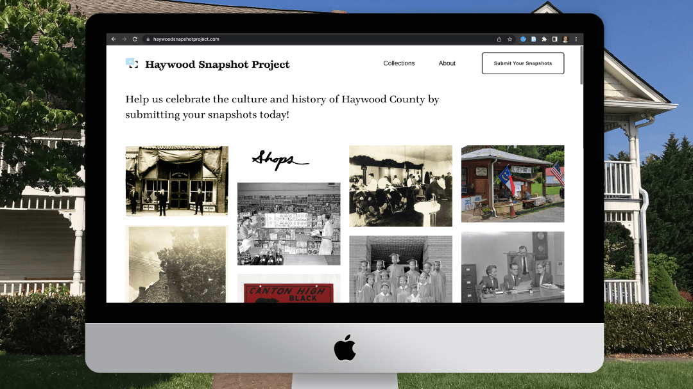

The design of a website, informed by ethnography
User testing has long been important to the product design process, but it can only take product design so far. There is a world of potential that exists beyond what the typical user testing session can reveal. The Haywood Snapshot Project explores this potentiality by leveraging ethnographic research to inform the direction and layout of its online archive—all while building trust within the community most affected by it.
View Squarespace MVP